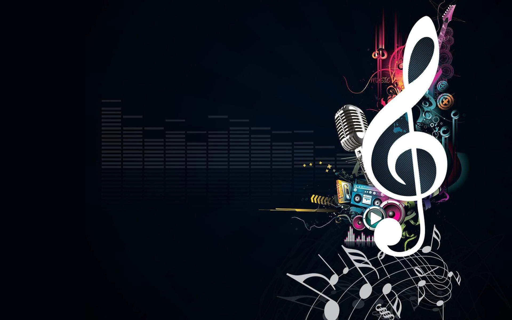
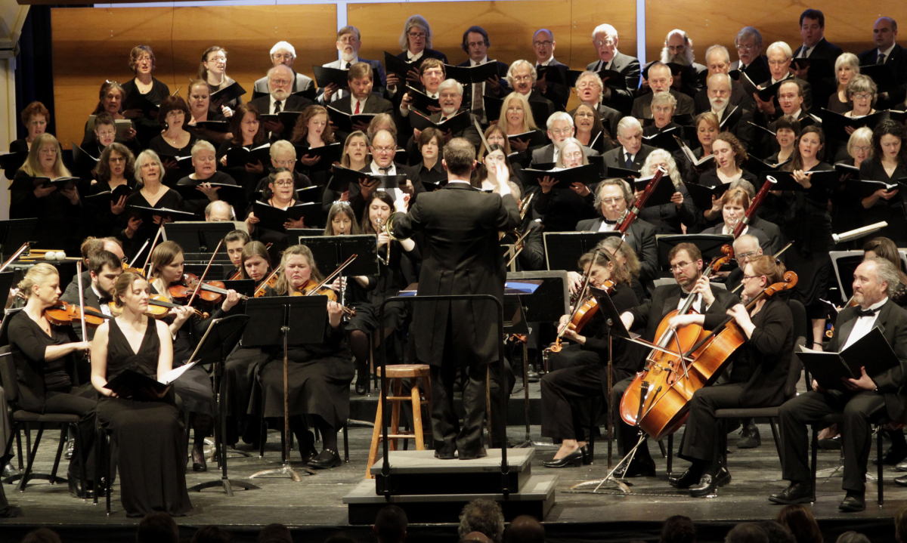
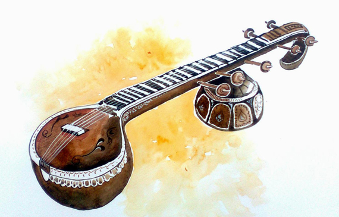
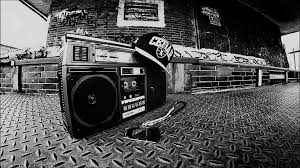

Classical

Classical music is a art of music produced or rooted in the traditions of Western culture, including both religious and secular music. Historically, the term 'classical music' refers specifically to the musical period from 1750 to 1820 (the Classical period).
EDM

EDM is Electronic dance music, also known as dance music, club music, or simply dance, is a broad range of percussive electronic music genres made largely for nightclubs, raves, and festivals.
POP

Pop is a genre of popular music that originated in its modern form during the mid-1950s in the United States and the United Kingdom. The terms popular music and pop music are often used interchangeably.
Classical Music

In a more general sense classical music refers to Western musical traditions considered to be apart from or a refinement of western folk music traditions and encompasses the broad span of time from before the 6th century AD to the present day, which includes the Classical period and various other periods.The central norms of this tradition became codified between 1650 and 1900, which is known as the common-practice period.
The term "classical music" did not appear until the early 19th century, in an attempt to distinctly canonize the period from Johann Sebastian Bach to Ludwig van Beethoven as a golden age.The earliest reference to "classical music" recorded by the Oxford English Dictionary is from about 1829.
EDM Music
It is generally produced for playback by DJs who create seamless selections of tracks, called a mix, by segueing from one recording to another.EDM producers also perform their music live in a concert or festival setting in what is sometimes called a live PA.
In the late 1980s and early 1990s, following the emergence of raving, pirate radios, and an upsurge of interest in club culture, EDM achieved widespread mainstream popularity in Europe. In the United States at that time, acceptance of dance culture was not universal outside of New York City; although both electro and Chicago house music were influential both in Europe and the United States.
POP Music

During the 1950s and 1960s, pop encompassed rock and roll and the youth-oriented styles it influenced. Rock and pop remained roughly synonymous until the late 1960s, after which pop became associated with music that was more commercial, ephemeral, and accessible.
Although much of the music that appears on record charts is seen as pop music, the genre is distinguished from chart music. Identifying factors usually include repeated choruses and hooks, short to medium-length songs written in a basic format (often the verse-chorus structure), and rhythms or tempos that can be easily danced to.
Folk Music

Traditional folk music has been defined in several ways: as music transmitted orally, music with unknown composers, or music performed by custom over a long period of time. It has been contrasted with commercial and classical styles. The term originated in the 19th century, but folk music extends beyond that.
Folk music includes traditional folk music and the genre that evolved from it during the 20th-century folk revival. Some types of folk music may be called world music.
Instrumental
An instrumental is a recording normally without any vocals, although it might include some inarticulate vocals, such as shouted backup vocals in a big band setting. Through semantic widening, a broader sense of the word song may refer to instrumentals.
In a song that is otherwise sung, a section that is not sung but which is played by instruments can be called an instrumental interlude, or, if it occurs at the beginning of the song, before the singer starts to sing, an instrumental introduction.
Hip-Hop Music

Hip hop music, also known as rap music, is a genre of popular music developed in the United States by inner-city African Americans and Latino Americans in the Bronx borough of New York City in the 1970s.
It consists of a stylized rhythmic music that commonly accompanies rapping, a rhythmic and rhyming speech that is chanted.Hip hop as both a musical genre and a culture was formed during the 1970s when block parties became increasingly popular in New York City.
ABOUT US
The Website created by musicians for musicians.
From the beginning we’ve had one goal: to empower artists to build effective websites for their music.
It all started in 1999, with a single band website built by Bandzoogle's founder Chris Vinson for his alt-rock band, Rubberman. Grassroots promotion, plus the online community that the website created, helped the band get a record deal.
In between tours, Chris worked at the record label designing websites for multi-platinum selling artists. To save time, he built a "control panel" to let artists make changes themselves. Realizing this could help independent bands and musicians build their own websites, Chris launched Bandzoogle in late 2003.
Some more About Us
As the needs of musicians have evolved, so has our mission to help them succeed online. Hired as Bandzoogle’s first support tech in 2007, Stacey Bedford became CEO in 2018. Named as a Billboard Digital Power Player in 2019, Stacey has helped expand the platform to include everything a musician needs to run a successful business online.
From mobile design options, to commission-free music and merch sales, built-in crowdfunding, and fan subscriptions tools, now tens of thousands of artists from around the world use Bandzoogle to create beautiful websites and power their direct-to-fan marketing and sales.
Whether you’re a musician looking to launch a website to highlight your own music, a music agency getting bookings on behalf of other artists, or you simply want to create a blog to discuss music, a music website design can be ideal for helping to engage people and achieve your objectives.